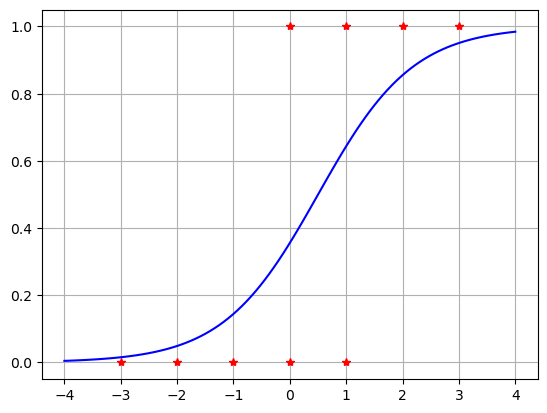
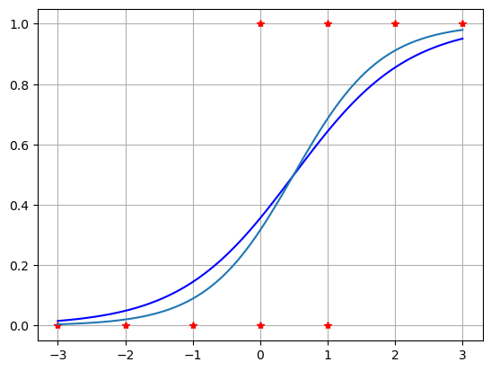

MATH 360 Introduction to Mathematical Modelling#
Learning Goals#
…
Prelecture Activities#
Readings#
…
Reflections#
…
Tasks#
…
Lecture Activities#
Active Learning (AL) Lecture
Think-Pair-Share
Group Work
Paired Group Presentations
Partial Derivatives of the Logistic Function [Group Work: 5 minutes]#
In the previous example, we used graphical methods to show how \(\sigma(x; W,b)\) depends on \(W\) and \(b\). Now let’s do some analysis.
Let \(z = Wx + b\) and \(\sigma(z) = \sigma(x; W,b)\). Compute and simplify the partial derivatives \(\displaystyle \frac{\partial \sigma}{\partial W}\) and \(\displaystyle \frac{\partial \sigma}{\partial b}\). How do these formulas related to our previous graphical observations?
Solution.
\[
\frac{\partial \sigma}{\partial W} = \sigma'(z) \frac{\partial z}{\partial W} = x \sigma(x;W,b) (1 - \sigma(x;W,b))
\]
\[
\frac{\partial \sigma}{\partial b} = \sigma'(z) \frac{\partial z}{\partial b} = \sigma(x;W,b) (1 - \sigma(x;W,b))
\]
Gradient Descent#
\[
C(W,b) = \sum_{k=0}^{N-1} (y_k - \sigma(x_k; W,b) )^2
\]
\[
\frac{\partial C}{\partial W} = -2 \sum_{k=0}^{N-1} x_k \sigma(x_k; W,b) (1 - \sigma(x_k; W,b)) ( y_k - \sigma(x_k; W,b) )
\]
\[
\frac{\partial C}{\partial b} = -2 \sum_{k=0}^{N-1} \sigma(x_k; W,b) (1 - \sigma(x_k; W,b)) ( y_k - \sigma(x_k; W,b) )
\]
sigma = lambda x,W,b: 1/(1 + np.exp(-(W*x + b)))
C = lambda W,b: np.sum((y - sigma(x,W,b))**2)
num = 50; alpha = 0.5;
WC = 1; bC = 1;
for n in range(num):
terms = sigma(x,WC,bC)*(1 - sigma(x,WC,bC))*(y - sigma(x,WC,bC))
dCdW = -2*np.sum(x*terms)
dCdb = -2*np.sum(terms)
WC = WC - alpha*dCdW
bC = bC - alpha*dCdb
if n%5 == 0:
print("n =",n,"Cost =",C(WC,bC),"WC =",WC,"bC =",bC)
---------------------------------------------------------------------------
NameError Traceback (most recent call last)
Cell In[1], line 6
4 WC = 1; bC = 1;
5 for n in range(num):
----> 6 terms = sigma(x,WC,bC)*(1 - sigma(x,WC,bC))*(y - sigma(x,WC,bC))
7 dCdW = -2*np.sum(x*terms)
8 dCdb = -2*np.sum(terms)
NameError: name 'x' is not defined
xhat = np.linspace(np.min(x)-1,np.max(x)+1,100)
yhatC = sigma(xhat,WC,bC)
plt.plot(x,y,'r*',xhat,yhatC,'b'), plt.grid(True)
plt.show()

E = lambda W,b: -np.sum( y*np.log(sigma(x,W,b)) + (1 - y)*np.log(1 - sigma(x,W,b)))
num = 10; alpha = 0.5;
WE = 1; bE = 1;
for n in range(num):
terms = sigma(x,WE,bE) - y
dEdW = np.sum(x*terms)
dEdb = np.sum(terms)
WE = WE - alpha*dEdW
bE = bE - alpha*dEdb
print("n =",n,"Entropy =",E(WE,bE),"WE =",WE,"bE =",bE)
n = 0 Entropy = 3.5763640359776407 WE = 1.3913539145459932 bE = -0.023221786734114236
n = 1 Entropy = 3.3632413473625995 WE = 1.3540709504431692 bE = -0.41063055054338854
n = 2 Entropy = 3.321613808532693 WE = 1.3959163870321838 bE = -0.5707880881936295
n = 3 Entropy = 3.308050175338244 WE = 1.445324873567641 bE = -0.647514375228093
n = 4 Entropy = 3.302435187606345 WE = 1.4817108035662916 bE = -0.6928204157222542
n = 5 Entropy = 3.2999148353065575 WE = 1.507055976548803 bE = -0.7221007809191053
n = 6 Entropy = 3.2987325840843615 WE = 1.5247005322756977 bE = -0.7417877694811115
n = 7 Entropy = 3.2981624607157967 WE = 1.53706008503374 bE = -0.7553094255225752
n = 8 Entropy = 3.297882468644048 WE = 1.5457669519088777 bE = -0.7647182103721255
n = 9 Entropy = 3.2977432544106926 WE = 1.551927193869799 bE = -0.7713209971605252
xhat = np.linspace(np.min(x),np.max(x),100)
yhatC = sigma(xhat,WC,bC)
yhatE = sigma(xhat,WE,bE)
plt.plot(x,y,'r*',xhat,yhatC,'b',xhat,yhatE), plt.grid(True)
plt.show()

Deliverable#
Submit to Canvas …